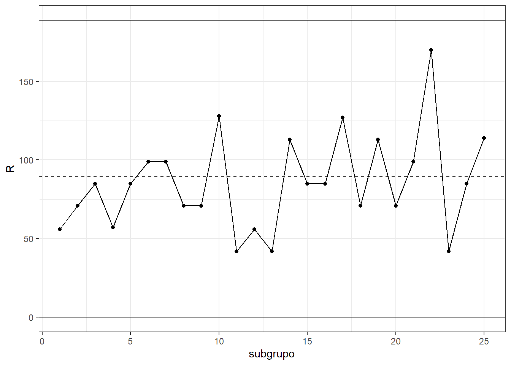
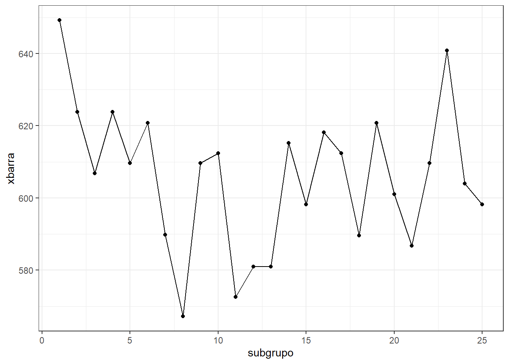
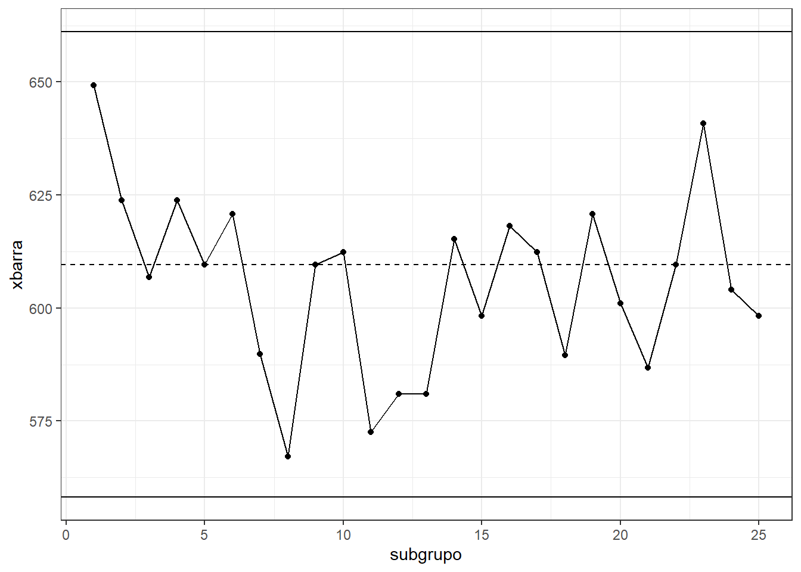
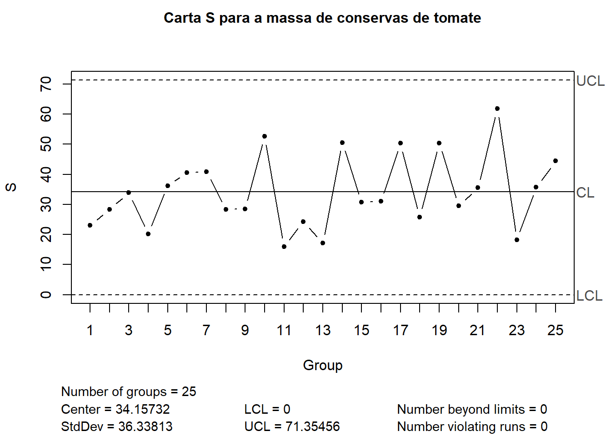

Cartas de controle para variáveis
Introdução
Uma característica de qualidade medida em escala contínua é chamada de variável. Por exemplo, volume, dimensão, temperatura, pressão, rugosidade, entre outras. Para controle estatístico de variáveis geralmente são usadas duas cartas, uma para a média do processo e outra para a dispersão deste. Enquanto a carta para média visa monitorar causas especiais de variação, a carta para dispersão é usada para monitorar causas comuns de variação.
A carta x-barra ou \(\overline x\) é a carta usada para monitorar a média do processo. Já a dispersão pode ser monitorada a partir da carta de amplitude, \(R\), ou da carta de desvio-padrão, \(s\), ou ainda a da variância \(s^2\). Entretanto, dada a facilidade de cálculo, há um século atrás quando as cartas foram desenvolvidas por Shewart, era mais fácil calcular a amplitude que o desvio-padrão, populariando o uso da carta \(R\) junto à carta \(\overline x\).
A seguir iustra-se uma carta x-barra com dois momentos distintos. Em um primeiro momento, considerando o horizonte de produção e controle relacionado às amostras 1 a 20, observa-se que o processo está estável, uma vez que as médias amostrais, plotadas em verde, estão dentro dos limites de controle. Posteriormente, das amostras 21 a 35, plotadas em vermelho, observa-se que houve um deslocamento considerável na média. Pode-se considerar que as amostras de 1 a 20 foram usadas para estimar os limites de controle, na primeira fase do monitoramento, enquanto as amostras 21 a 35 foram plotadas junto aos limites estimados anteriormente para controlar a produção futura. Possívelmente há uma causa especial ou atribuível de variação no processo. Observa-se ao lado os gráficos de densidade da distribuição normal representando a variabilidade e média dos processos antes e depois do deslocamento na média. Ao observar uma situação similar a esta pode-se usar de ferramentas de qualidade e de gerenciamento da mehoria de qualidade como DMAIC ou PDCA para identificar o problema, se possível antes de voltar à produção.
Os esquemas de controle tanto usando cartas \(\overline x\)/\(R\) ou \(\overline x\)/\(s\) é baseado em amostras, sendo os mais aplicados em sistemas de produção em lotes ou em massa de produtos discretos, uma vez que o custo de monitoramento de 100% da produção é alto. Tal esquema de controle por amostragem é baseado em subgrupos racionais. Cada subgrupo ou amostra é tomado em um instante de tempo no horizonte de produção. O conceito de subgrupo racional implica na seleção de amostras de modo que, se causas atribuíveis estiverem presentes, a chance de diferenças entre subgrupos será maximizada, enquanto a chance de diferenças devido a causas atribuíveis dentro de um subgrupo será minimizada. Ou seja, deve-se planejar o intervalo de tempo ideal para coleta de novas amostras, visando a garantia de que possíveis mudanças devido a causas atribuíveis não demorem a ser detectadas.
É importante também diferenciar limites de controle e limites de especificação, possibilitando o entendimento do que é variabilidade de processo e do que é capacidade de processo. Especificação consiste em limites relacionados ao projeto do produto, norma ou pedido do cliente. Ou seja, são limites que foram especificados para a variável sob controle e devem ser atendidos, de forma que o produto seja dito conforme. Já os limites de controle são calculados considerando a variabilidade do processo e servem para medir o seu desempenho. A Figura abaixo ilustra um caso onde uma característica de qualidade monitorada apresenta limites de especificação iguais a 94 e 106. Dois processos são monitorados, um processo “A” apresenta média centrada na especificação, isto é, igual a 100, com limites de controle iguais a 97 e 103. Já o processo “B” apresenta média deslocada à direita e igual a 105, com limites de controle iguais a 102 e 108. Observa-se que a variabilidade de ambos os processos são iguais, porém o processo B apresenta média mais alta. Pode-se observar que o processo B apresenta maior probabilidade de apresentar resultados acima do limite superior de especificação, mesmo estando sob controle.
A seguir compara-se novamente o processo “A” a um processo “C” que, apesar de apresentar a mesma média que “A”, apresenta uma variabilidade maior. Observa-se que enquanto ambos os limites de controle de A estão dentro dos limites de especificação, no processo C os limites de controle estão para além dos =de especificação. Logo, mesmo o processo estando sob controle, este pode não ser capaz de atender às especificações do processo. Os limites de controle medem a variabilidade do processo, ou seja, dentro destes há uma confiança de encontrar a média da característica de qualidade monitorada. Enquanto os limites de controle são estimados a partir de amostras da característica de qualidade monitorada, os limites de especificação já são estabelecidos antes de começar a produção e devem ser atendidos ou respeitados. O não atendimento destes acarretará no prejuizo, ou seja, produção de itens fora do especificado, sendo estes descartados ou sendo necessário correções e retrabalho.

Cartas de controle x-barra e R
Seja uma variável \(x\) normalmente distribuída com média \(\mu\) e desvio-padrão \(\sigma\). Se \(x_1, x_2, ..., x_n\) é uma amostra de tamanho \(n\), então a média desta amostra é:
\[ \overline x = \frac{x_1+x_2+...+x_n}{n}= \frac{\sum_{i=1}^nx_i}{n}. \]
Sabe-se que \(\overline x\) é normalmente distribuída com média \(\mu\) e desvio-padrão \(\sigma_{\overline x} = \sigma/\sqrt{n}\).
Existe a probabilidade ou confiança igual a \(\gamma = 1-\alpha\) de que qualquer amostra desta variável caia entre
\[ \mu \pm z_{\alpha/2}\frac{\sigma}{\sqrt{n}}. \]
Logo, se \(\mu\) e \(\sigma\) são conhecidos, pode-se usar os limites acima para controlar a média. Geralmente usa-se \(z_{\alpha/2}=3\), de forma que \(\gamma = 0,9973\).
Na prática não se conhece \(\mu\) e \(\sigma\), sugerindo-se usar \(m\) de 20 a 25 amostras de tamanho \(n\) para estimativa dos parâmetros e cálculo dos limites de controle. A Tabela a seguir sugere como as amostras podem ser organizadas para monitorar o processo.
| Amostra | \(x_1\) | \(x_2\) | \(\dots\) | \(x_n\) | \(\overline{x}\) | \(R\) |
|---|---|---|---|---|---|---|
| 1 | \(x_{11}\) | \(x_{12}\) | \(\dots\) | \(x_{1n}\) | \(\overline{x}_1\) | \(x_{1\text{(max)}} -x_{1\text{(min)}}\) |
| 2 | \(x_{21}\) | \(x_{22}\) | \(\dots\) | \(x_{2n}\) | \(\overline{x}_2\) | \(x_{2\text{(max)}} -x_{2\text{(min)}}\) |
| \(\vdots\) | \(\vdots\) | \(\vdots\) | \(\ddots\) | \(\vdots\) | \(\vdots\) | \(\vdots\) |
| \(m\) | \(x_{m1}\) | \(x_{m2}\) | \(\dots\) | \(x_{mn}\) | \(\overline{x}_m\) | \(x_{m\text{(max)}} -x_{m\text{(min)}}\) |
Para cada amostra pode-se calcular a média \(\overline x_j\) e a amplitude \(R = x_{j\text{(max)}} -x_{j\text{(min)}}\), \(j=1,...,m\), conforme as últimas duas colunas da tabela, para monitorar causas especiais e comuns, respectivamente.
A estimativa para a média geral será:
\[ \overline{\overline{x}} = \frac{\overline x_1+\overline x_2+...+\overline x_m}{m}= \frac{\sum_{j=1}^m \overline x_j}{m}. \]
Já a média das amplitudes ou a amplitude média será:
\[ \overline R = \frac{R_1 + R_2 + ... R_m}{m} = \frac{\sum_{j=1}^m R_j}{m}. \]
Os limites de controle para a carta \(\overline x\) podem ser estimados conforme segue:
\[ \begin{align} LSC =&\text{ } \overline{\overline{x}} + A_2\overline R\\ LC =&\text{ } \overline{\overline{x}} \\ LIC =&\text{ } \overline{\overline{x}} - A_2\overline R,\\ \end{align} \]
onde \(A_2\) é uma constante tabelada que varia segundo o tamanho amostral, \(n\). Já os limites da carta para a amplitude podem ser estimados conforme segue:
\[ \begin{align} LSC =&\text{ } D_4\overline R\\ LC =&\text{ } \overline{R} \\ LIC =&\text{ } D_3\overline R,\\ \end{align} \]
onde \(D_3\) e \(D_4\) são constantes tabeladas para tamanhos amostrais distintos.
Assim como nos primordios do CEQ era mais fácil calcular a amplitude que o desvio-padrão, as constantes foram criadas para facilitar a estimativa dos limites. Observando os limites da carta x-barra, pode-se constatar que a margem de erro que define os limites, \(\pm A_2 \overline R\), consiste em uma estimativa de \(3\sigma/\sqrt{n}\). Estudou-se a média ou esperança da amplitude, \(E(R)\), vendo que esta se aproxima do desvio-padrão multiplicado por uma constante, \(d_2\), também tabelada segundo o tamanho amostral, isto é, \(E(R)=d_2\sigma\). A variável aleatória \(W=R/\sigma\) foi muito estudada no início do CEQ e sua distribuição depende de \(n\), com média \(E(W) = d_2\). Logo, \(\hat\sigma = R/d_2\) é um estimador não enviesado para \(\sigma\). A eficiência de tal estimativa varia segundo o tamanho amostral.
| n | Eficiência de \(d_2\) |
|---|---|
| 2 | 1,000 |
| 3 | 0,992 |
| 4 | 0,975 |
| 5 | 0,955 |
| 6 | 0,930 |
| 10 | 0,850 |
Recomenda-se, portanto, \(n\leq6\) para cartas x-barra e R.
Se \(\overline{\overline{x}}\) é um estimador não enviesado de \(\mu\) e \(R/d_2\) um estimador não enviesado de \(\sigma\), então a carta \(\overline x\) fica:
\[ \begin{align} LSC =&\text{ } \overline{\overline{x}} + \frac{3}{d_2\sqrt{n}}\overline R\\ LC =&\text{ } \overline{\overline{x}} \\ LIC =&\text{ } \overline{\overline{x}} - \frac{3}{d_2\sqrt{n}}\overline R,\\ \end{align} \]
porém, para facilitar o trabalho, a constante \(A_2 = 3/(d_2\sqrt{n})\) foi definida e tabelada segundo o tamanho amostral, de forma que os limites de controle fiquem conforme especificado inicialmente.
Para a carta R há uma constante adicional que está relacionada ao desvio-padrão da amplitude, \(\sigma_R\). \(\sigma_R = d_3\sigma = d_3 \overline R/d_2\). Logo, para a carta R, tem-se:
\[ \begin{align} LSC =& \overline{R} + 3\sigma_R = \overline{R} + 3d_3\frac{\overline{R}}{d_2}\\ LC =&\overline{R} \\ LIC =& \overline{R}- 3\sigma_R = \overline{R} - 3d_3\frac{\overline{R}}{d_2},\\ \end{align} \]
Para facilitar os cálculos, foram definidos as constantes \(D_3 = 1 - 3\frac{d_3}{d_2}\) e \(D_4 = 1 + 3\frac{d_3}{d_2}\), de forma que os limites expostos acima ficam conforme os expostos inicialmente.
Implementação
Exemplo: Uma empresa utiliza o controle estatístico de qualidade para controlar sua linha de produção de conservas de tomate. Diversas vezes, durante o turno nessa fábrica de conservas, um inspetor retirava da linha de produção 5 latas que haviam sido enchidas e seladas. O inspetor abria cada lata, esvaziava e pesava o conteúdo sólido, registrando os resultados. A tabela abaixo mostra os resultados da medição do peso drenado, abrangendo 11 dias de operação.
tomate <- read.csv("tomate.csv", header=T)
tomate Subgrupo Data Tempo X1 X2 X3 X4 X5
1 1 Sept. 21 09:30:00 624 638 638 680 666
2 2 Sept. 21 10:50:00 581 638 638 652 610
3 3 Sept. 21 11:45:00 567 581 652 624 610
4 4 Sept. 21 14:30:00 595 624 624 652 624
5 5 Sept. 21 17:25:00 638 553 638 624 595
6 6 Sept. 22 10:00:00 652 666 595 624 567
7 7 Sept. 22 13:15:00 539 567 624 581 638
8 8 Sept. 22 17:00:00 610 581 539 553 553
9 9 Sept. 23 09:30:00 595 638 567 624 624
10 10 Sept. 23 13:15:00 610 652 624 652 524
11 11 Sept. 23 13:45:00 567 553 595 567 581
12 12 Sept. 23 15:30:00 539 595 595 595 581
13 13 Sept. 25 08:00:00 553 581 595 581 595
14 14 Sept. 25 10:25:00 567 610 680 652 567
15 15 Sept. 25 11:30:00 638 553 595 610 595
16 16 Sept. 25 14:30:00 610 581 624 610 666
17 17 Sept. 25 15:15:00 539 610 652 595 666
18 18 Sept. 25 17:30:00 595 581 553 624 595
19 19 Sept. 26 14:00:00 567 666 680 581 610
20 20 Sept. 26 15:00:00 624 581 595 638 567
21 21 Sept. 26 16:45:00 539 581 595 581 638
22 22 Sept. 27 07:30:00 610 709 595 539 595
23 23 Sept. 27 08:35:00 638 624 652 624 666
24 24 Sept. 27 10:40:00 638 624 624 553 581
25 25 Sept. 27 13:45:00 524 624 638 595 610
26 26 Sept. 27 15:30:00 610 581 581 468 610
27 27 Sept. 27 16:00:00 680 624 496 595 638
28 28 Sept. 28 07:15:00 624 496 595 624 666
29 29 Sept. 28 07:45:00 624 567 581 680 610
30 30 Sept. 28 10:00:00 638 595 553 610 638
31 31 Sept. 28 13:15:00 567 624 567 610 567
32 32 Sept. 28 15:30:00 595 553 624 567 567
33 33 Sept. 29 09:00:00 638 610 595 610 666
34 34 Sept. 29 10:50:00 624 595 595 581 595
35 35 Sept. 29 13:15:00 709 567 567 581 638
36 36 Sept. 29 14:30:00 581 595 595 539 595
37 37 Sept. 29 16:10:00 610 624 624 567 595
38 38 Sept. 29 17:20:00 610 624 610 581 638
39 39 Sept. 30 09:30:00 638 695 723 567 595
40 40 Sept. 30 11:15:00 610 680 610 610 638
41 41 Sept. 30 14:10:00 652 666 595 610 610
42 42 Sept. 30 15:30:00 638 553 610 581 567
43 43 Oct. 2 08:20:00 666 652 695 610 581
44 44 Oct. 2 14:30:00 595 595 695 652 638
45 45 Oct. 2 15:30:00 695 610 610 638 638
46 46 Oct. 2 17:00:00 680 595 680 624 581
47 47 Oct. 3 09:15:00 666 638 567 567 595
48 48 Oct. 3 10:00:00 624 581 595 638 652
49 49 Oct. 3 13:00:00 624 666 680 624 624
50 50 Oct. 3 15:00:00 666 595 666 610 652library(qcc)
qcc.options(bg.margin = "white")Serão implementadas as cartas R e x-barra para estimar os limites de controle.
Carta R.
dados_tomate <- tomate[,4:8]
cartaR_tomate <- qcc(dados_tomate[1:25,],
type="R",
title = "Carta R para a massa de conservas de tomate", ylab = "R")
summary(cartaR_tomate)
Call:
qcc(data = dados_tomate[1:25, ], type = "R", title = "Carta R para a massa de conservas de tomate", ylab = "R")
R chart for dados_tomate[1:25, ]
Summary of group statistics:
Min. 1st Qu. Median Mean 3rd Qu. Max.
42.00 71.00 85.00 85.48 99.00 170.00
Group sample size: 5
Number of groups: 25
Center of group statistics: 85.48
Standard deviation: 36.74979
Control limits:
LCL UCL
0 180.7449Carta x-barra com desvio-padrão da média estimado via amplitude média.
cartaxbar_tomate <- qcc(dados_tomate[1:25,],
type="xbar", std.dev = "UWAVE-R",
title = "Carta x-barra para a massa de conservas de tomate",
ylab = "x-barra")
summary(cartaxbar_tomate)
Call:
qcc(data = dados_tomate[1:25, ], type = "xbar", std.dev = "UWAVE-R", title = "Carta x-barra para a massa de conservas de tomate", ylab = "x-barra")
xbar chart for dados_tomate[1:25, ]
Summary of group statistics:
Min. 1st Qu. Median Mean 3rd Qu. Max.
567.200 589.800 609.600 605.696 618.200 649.200
Group sample size: 5
Number of groups: 25
Center of group statistics: 605.696
Standard deviation: 36.74979
Control limits:
LCL UCL
556.391 655.001Carta x-barra sem as estatísticas.
cartaxbar_tomate <- qcc(dados_tomate[1:25,], add.stats=FALSE,
type="xbar", std.dev = "UWAVE-R",
title = "Carta x-barra para a massa de conservas de tomate",
ylab = "x-barra")Realizando a implementação passo a passo (Atenção, aqui seria mais para entendimento e não para realização de prova, listas de exercícios e atuação profissional. Sugere-se usar extensivamente os pacotes, conforme feito inicialmente).



Cartas de controle x-barra e s
Apesar da simplicidade da carta \(R\), em alguns casos pode ser interessante o uso da carta do desvio-padrão, \(s\), para monitorar causas comuns de variação. Em geral quando (i) o tamanho amostral, \(n\), é grande e (ii) quando \(n\) varia por amostra.
Seja a variância amostral,
\[ s^2 =\sum_{i=1}^n\frac{(x_i-\overline x)^2}{n-1}, \]
um estimador não-enviesado para a variância populacional, isto é, \(E(s^2)=E(\sigma^2)\). Porém, o desvio-padrão amostral, \(s\), não é um estimador não enviesado para o desvio-padrão populacional, \(\sigma\). Pode-se mostrar que
\[ E(s)=\biggl(\frac{2}{n-1}\biggr) \frac{\Gamma(n/2)}{\Gamma[ (n-1)/2 ]}\sigma = c_4\sigma, \]
onde \(c_4\) é uma constante que varia segundo o tamanhoa amostral. Logo, uma estimativa não enviesada para \(\sigma\) fica conforme segue.
\[ \hat \sigma = \frac{s}{c_4} \]
Ademais, também é possível provar que o desvio-padrão de \(s\) é igual a \(\sigma \sqrt{1-c_4^2}\).
Logo, os limites de controle para a carta \(s\) ficam:
\[ \begin{align} LSC =& s + 3\sigma_s = c_4\sigma + \sigma \sqrt{1-c_4^2}\\ LC =& s = c_4\sigma\\ LIC =& s - 3\sigma_s = c_4\sigma - \sigma \sqrt{1-c_4^2}\\ \end{align} \]
Tomando os limites e colocando \(\sigma\) em evidência é possível definir novas constantes, \(B_6=c_4 + \sqrt{1-c_4^2}\) e \(B_5=c_4 - \sqrt{1-c_4^2}\). Logo, os limites podem ser simplificados para:
\[ \begin{align} LSC =& B_6\sigma\\ LC =& c_4\sigma\\ LIC =& B_5\sigma\\ \end{align} \]
Em muitas situações práticas não há um valor de referência para \(\sigma\). Logo, deve-se estimar \(\sigma\) a partir de dados amostrais. Sejam \(m\) amostras de tamanho \(n\) e seja o desvio-padrão da i-ésima amostra, \(s_i\). A média dos \(m\) desvios padrão é
\[\overline s= \frac{\sum_{i=1}^ms_i}{m}.\]
A estatística \(\overline s/c_4\) é um estimador não enviesado de \(\sigma\). Logo:
\[ \begin{align} LSC =& \overline s + 3 \frac{\overline s}{c_4}\sqrt{1-c_4^2}\\ LC =& \overline s\\ LIC =& \overline s - 3 \frac{\overline s}{c_4}\sqrt{1-c_4^2}\\ \end{align} \]
De forma análoga, colocando \(\overline s\) em evidência, pode-se definir novas constantes \(B_3=1 - \frac{3}{c_4}\sqrt{1-c_4^2}\) e \(B_4=1 + \frac{3}{c_4}\sqrt{1-c_4^2}\), simplificando a carta, conforme segue.
\[ \begin{align} LSC =& B_4{\overline s}\\ LC =& \overline s\\ LIC =& B_3{\overline s}\\ \end{align} \]
É importante recordar que quando usamos a carta \(R\) para monitorar causa comum, o desvio-padrão da média, necessário à carta \(\overline x\), era estimado a partir da média das amplitudes. Logo, quando usa-se a carta \(s\), pode-se estimar \(\sigma_{\overline x}\) como \(\sigma_{\overline x} = \overline s /(c_4\sqrt n)\). Logo, a carta \(\overline x\) fica conforme segue.
\[ \begin{align} LSC =&\text{ } \overline{\overline{x}} + \frac{3}{c_4\sqrt{n}}\overline s\\ LC =&\text{ } \overline{\overline{x}} \\ LIC =&\text{ } \overline{\overline{x}} - \frac{3}{c_4\sqrt{n}}\overline s,\\ \end{align} \]
Fazendo \(A_3=3/(c_4\sqrt n)\), tem-se os limites da carta \(\overline x\) estimados via \(\overline s\).
\[ \begin{align} LSC =&\text{ } \overline{\overline{x}} + A_3\overline s\\ LC =&\text{ } \overline{\overline{x}} \\ LIC =&\text{ } \overline{\overline{x}} - A_3\overline s,\\ \end{align} \]
No início do CEQ usar a carta \(R\) era mais cômodo, dada a facilidade do cálculo da amplitue amostral. Porém, hoje, com a disponibilidade de calculadoras científicas e computadores o cálculo de \(s\) é realizado facilmente. Ademais, o advento dos pacotes computacionais estatísticos, por exemplo a linguagem R e o pacote qcc facilitam muito a obtenção dos limites, bastando entrar com os dados no formato apropriado e escolher a carta adequada.
Implementação
Carta s.
cartaS_tomate <- qcc(dados_tomate[1:25,],
type="S",
title = "Carta S para a massa de conservas de tomate", ylab = "S")
Carta x-barra com desvio-padrão da média estimado via média dos desvios-padrão.
cartaxbar_tomate <- qcc(dados_tomate[1:25,],
type="xbar", std.dev = "UWAVE-SD",
title = "Carta x-barra para a massa de conservas de tomate",
ylab = "x-barra")Fases I e II do CEQ
O controle estatístico é geralmente realizado em duas fases. A primeira fase é a de estimativa dos limites de controle. Nesta fase são coletadas de \(m=20\) a \(25\) amostras de tamanho \(n\) para estimar os limites de controle. Caso algum ponto apareça fora de controle, sugere-se realizar um plano de ação, por exempo empregando ferramentas de qualidade e encontrar a causa de variação atribuível à amostra em questão para eliminá-la e continuar o processo de estimativa dos limites de controle.
A segunda fase consiste no monitoramento da produção futura com os limites estimados na primeira fase. Nesta fase a coleta de amostras continua com a mesma periodicidade e novas observações são plotadas na carta. A diferença é que as observações futuras não são usadas para definir os limites de controle. Estes foram definidos anteriormente na primeira fase e deseja-se que o processo de controle permaneça estável, objetivo este da segunda fase.
É importante atualizar os limites de controle com certa frequência, de acordo com mudanças realizadas no processo ou até mesmo a necessidade de passar para um nível de variabilidade mais baixo (estreitar os limites), após alguma melhoria no processo.
Implementação
Carta R com dados futuros.
cartaR_tomate <- qcc(dados_tomate[1:25,],
newdata = dados_tomate[26:50,],
type="R",
title = "Carta R para a massa de conservas de tomate", ylab = "R")Carta x-barra com dados futuros.
xbarfuture <- qcc(dados_tomate[1:25,], newdata = dados_tomate[26:50,],
type="xbar", std.dev = "UWAVE-R",
title = "Carta x-barra para a massa de conservas de tomate",
ylab = "x-barra")Carta x-barra com dados futuros sem dados da primeira fase.
xbarfuture2 <- qcc(dados_tomate[1:25,], newdata = dados_tomate[26:50,],
type="xbar", std.dev = "UWAVE-SD", chart.all=FALSE,
title = "Carta x-barra para a massa de conservas de tomate",
ylab = "x-barra")Critérios para determinar se um processo está sob controle estatístico ou não
O critério principal para dizer que um processo não está sob controle estatístico é a partir da observação de um ou mais pontos fora dos limites de controle.
A seguir são listadas outras regras que podem ser usadas na prática para as cartas de Shewart. As quatro primeiras foram definidas pela Western Electric.
- Um ou mais pontos fora dos limites de controle;
- Dois de três pontos consecutivos fora dos limites de alerta de dois sigma, mas ainda dentro dos limites de controle;
- Quatro de cinco pontos consecutivos além dos limites de um sigma;
- Uma sequência de oito pontos consecutivos em um lado da linha central
- Seis pontos consecutivos aumentando ou diminuindo constantemente;
- Quinze pontos consecutivos na zona C (acima e abaixo da linha central);
- Quatorze pontos consecutivos alternando para cima e para baixo;
- Oito pontos consecutivos em ambos os lados da linha central sem nenhum na zona C;
- Um padrão incomum ou não aleatório nos dados;
- Um ou mais pontos próximos a um limite de alerta ou controle.
A seguir exemplica-se como identificar tais padrões indesejados nas cartas.
É importante alertar que o excesso de regras pode gerar alarmes falsos. Conforme observados algumas regras são redundantes e em algumas situações alguns padrões podem aparecer sem clara indicação de um processo fora de controle. Ademais o excesso de regras pode dificultar o monitoramento. O ideal é que se considere pontos fora de controle, ou seja, a primeira regra como a principal. Porém, mesmo a primeira regra pode estar relacionada a um alarme falso, ou erro do tipo I.
Implementação
Carta x-barra com limites de aviso de 2 sigma.
cartaxbar <- qcc(dados_tomate[1:25,],
type="xbar", std.dev = "UWAVE-R",
title = "Carta x-barra para a massa de conservas de tomate",
ylab = "x-barra",
plot = FALSE)
limites.aviso <- limits.xbar(cartaxbar$center, cartaxbar$std.dev, cartaxbar$sizes, 2)
plot(cartaxbar, restore.par = FALSE)
abline(h = limites.aviso, lty = 3, col = "orangered")Prova que \(E(s) = c_4\sigma\)
Vamos demonstrar que o valor esperado do desvio padrão amostral é dado por:
\[E(s) = \sqrt{\frac{2}{n-1}} \frac{\Gamma\left(\frac{n}{2}\right)}{\Gamma\left(\frac{n-1}{2}\right)} \sigma = c_4 \sigma\]
Comprimetno médio da sequência
O comprimento médio da sequência (average run length - ARL) consiste no número médio de pontos ou amostras até uma observação ser plotada fora dos limites. Existem dois tipos de comprimento médio da sequência: um quando o processo está sob controle e um ponto é plotado fora, sendo este classificado como alarme falso; e outro quando o processo está de fato fora de controle e deseja-se saber o número médio de pontos necessários para que a carta identifique o desvio, ou seja, deseja-se medir a sensibilidade da carta à presença de causas especiais.
\(ARL_0\)
Seja o comprimento médio da sequência para um processo sob controle estatístico:
\[ ARL_0 = \frac{1}{\alpha} \]
onde \(alpha = 1 - \gamma\). Sabe-se que quando são considerados limites de 3 desvios-padrões, \(\gamma = 0,9973\). Logo, \(\alpha = 0,0027\) na maioria dos casos. A seguir observa-se uma carta com 500 observações e apenas um ponto fora de controle. Neste caso o ponto fora de controle é da amostra 373, bem próximo do esperado. Trata-se de um alarme falso, o próprio padrão da carta não aponta indícios significativos de causa especial.
\(ARL_1\)
Quando o processo está fora de controle não necessariamente a carta identificará um ponto fora de controle rapidamente. Podem ser necessários produzir fora de controle durante o tempo, até que a carta aponte um ponto fora dos limites.
Seja \(\beta\) a probabilidade ou risco de a carta não detectar uma causa especial de variação. Suponha que a média, \(\mu\), quando está sob controle é \(\mu_0\) e quando o processo está fora de controle é \(\mu_1 = \mu_0+k\sigma\), ou seja a média a média sob controle adicionada de um desvio de \(k\) desvios-padrões. A probabilidade de não detectar o desvio a partir da primeira amostra plotada após a causa especial é:
\[ \beta = p(LIC \leq \overline x \leq LSC | \mu = \mu_0+k\sigma). \]
Sabendo-se que os limites de controle da carta \(\overline{x}\) são estimados como \(LIC/LSC = \overline{\overline{x}} \pm L\sigma/\sqrt{n}\), considere o caso onde a carta é padronizada, de forma que
\[ \overline z = \frac{\overline x - \mu}{\sigma/\sqrt{n}}. \]
Neste caso os limites poderiam ser expressos como \(LIC/LSC =\pm L\), ou na maioria das cartas, \(LIC/LSC =\pm 3\). Logo:
\[ \beta = p(-L \leq \overline x \leq L | \mu = \mu_0+k\sigma). \]
Tomando a média a ser plotada após a causa especial, tem-se que \(\overline x \to \mu_0 + k\sigma\). Padronizando a média antes de plotar na carta padronizada:
\[ \frac{\overline x - \mu_0}{\sigma/\sqrt{n}} = \frac{(\mu_0 + k\sigma) - \mu_0}{\sigma/\sqrt{n}} \simeq k\sqrt n. \]
Logo,
\[ \beta = p(\overline z \leq L-k\sqrt{n}) - p(\overline z \leq -L-k\sqrt{n}) = \Phi(L-k\sqrt{n})-\Phi(-L-k\sqrt{n}) \]
Como \(\beta\) é a probabilidade de a carta não detectar um desvio, \(1-\beta\) seria a probabilidade de a carta plotar um ponto fora de cobtrole dado que há uma causa especial de variação presente no processo. Logo,
\[ ARL_1 = \frac{1}{1-\beta}. \]
A seguir plotam-se curvas característica de operação para distintos tamanhos amostrais. Observa-se que o erro \(\beta\) diminui à medida que aumenta um tamanho amostral para um \(k\) fixo. Ou para um tamanho amostraç \(n\) fixo, observa-se que quanto maior o deslocamento na média \(k\), menor o risco de a carta não detectar a causa especial.

Abaixo observa-se um caso onde após o estabelecimento dos limites, no início do controle da produção futura, aconteceu um desvio no processo de \(1,5\sigma\) (\(k=1,5\)) na média do processo.. Observa-se que na segunda amostra a carta identificou o desvio, plotando a média fora de controle.
Implementação
Seja um processo de controle onde se adotam limites de 3 desvios-padrões, isto é \(L=3\), usa-se \(n=5\) e há um deslocamento de \(1,5\sigma\), isto é, \(k = 1,5\). Qual o risco de a próxima amostra não detectar o desvio?
Deve-se resolver:
\[ \beta = \Phi(3-1,5\sqrt{5}) - \Phi(-3-1,5\sqrt{5}) \]
Resolvendo via R:
beta <- pnorm(3-1.5*sqrt(5))-pnorm(-3-1.5*sqrt(5))
beta[1] 0.3616312Logo, a carta com \(L=3\) e \(n=5\) tem 0,36 de probabilidade de não detectar um desvio na primeira amostra após o problema. O comprimento médio da sequência para detectar o desvio, \(ARL_1\) pode ser obtido conforme segue:
1/(1-beta)[1] 1.566493Ou seja, entre uma ou duas amostras serão necessárias para detectar tal deslocamento.
Seja um processo de controle onde se adotam limites de 3 desvios-padrões, isto é \(L=3\), usa-se \(n=3\) e há um deslocamento de \(1\sigma\), isto é, \(k = 1\). Qual a probabilidade de a próxima amostra não detectar o desvio?
n=3
L=3
k=1
beta <- pnorm(L-k*sqrt(n)) - pnorm(-L-k*sqrt(n))
beta[1] 0.8975908Qual o número médio de amostras para detectar tal desvio?
ARL1 <- 1/(1-beta)
ARL1[1] 9.7647521. Definição do Desvio Padrão Amostral
O desvio padrão amostral é definido como:
\[s = \sqrt{\frac{1}{n-1} \sum_{i=1}^n (X_i - \overline{x})^2}\]
onde \(\overline{x}\) é a média amostral.
2. Distribuição de \(s\)
Assumindo que \(X_i \sim N(\mu, \sigma^2)\) i.i.d., sabemos que:
\[\frac{(n-1)s^2}{\sigma^2} \sim \chi^2_{n-1}\]
3. Cálculo de \(E(s)\)
Podemos expressar \(s\) em termos da distribuição qui-quadrado:
\[s = \sigma \sqrt{\frac{\chi^2_{n-1}}{n-1}}\]
Portanto:
\[E(s) = \sigma E\left(\sqrt{\frac{\chi^2_{n-1}}{n-1}}\right) = \frac{\sigma}{\sqrt{n-1}} E\left(\sqrt{\chi^2_{n-1}}\right)\]
4. Esperança da Raiz Quadrada de \(\chi^2\)
Para uma variável qui-quadrado com \(\nu\) graus de liberdade:
\[E\left(\sqrt{\chi^2_{\nu}}\right) = \sqrt{2} \frac{\Gamma\left(\frac{\nu+1}{2}\right)}{\Gamma\left(\frac{\nu}{2}\right)}\]
Aplicando para \(\nu = n-1\):
\[E\left(\sqrt{\chi^2_{n-1}}\right) = \sqrt{2} \frac{\Gamma\left(\frac{n}{2}\right)}{\Gamma\left(\frac{n-1}{2}\right)}\]
5. Resultado Final
Substituindo:
\[E(s) = \frac{\sigma}{\sqrt{n-1}} \cdot \sqrt{2} \frac{\Gamma\left(\frac{n}{2}\right)}{\Gamma\left(\frac{n-1}{2}\right)} = \sigma \cdot \sqrt{\frac{2}{n-1}} \frac{\Gamma\left(\frac{n}{2}\right)}{\Gamma\left(\frac{n-1}{2}\right)}\]
Portanto:
\[c_4 = \sqrt{\frac{2}{n-1}} \frac{\Gamma\left(\frac{n}{2}\right)}{\Gamma\left(\frac{n-1}{2}\right)}\]
Verificação Numérica em R
Podemos verificar o valor de \(c_4\) para diferentes tamanhos amostrais:
# Função para calcular c4
c4 <- function(n) {
sqrt(2/(n-1)) * gamma(n/2) / gamma((n-1)/2)
}
# Exemplo para n = 5
n <- 5
c4_value <- c4(n)
c4_value[1] 0.9399856Prova que o desvio padrão de \(s\) é \(\sigma\sqrt{1 - c_4^2}\)
Queremos demonstrar que:
\[\sigma_s = \sigma \sqrt{1 - c_4^2}\]
onde: - \(s\) é o desvio padrão amostral - \(\sigma\) é o desvio padrão populacional - \(c_4\) é o fator de correção para amostras finitas
1. Relação entre Variância de \(s\) e \(s^2\)
Sabemos que: \[\text{Var}(s) = E(s^2) - [E(s)]^2\]
Mas \(E(s^2) = \sigma^2\) (estimador não viesado da variância)
E já demonstramos anteriormente que \(E(s) = c_4 \sigma\)
Portanto: \[\text{Var}(s) = \sigma^2 - (c_4 \sigma)^2 = \sigma^2 (1 - c_4^2)\]
2. Desvio Padrão de \(s\)
Tomando a raiz quadrada da variância: \[\sigma_s = \sqrt{\text{Var}(s)} = \sqrt{\sigma^2 (1 - c_4^2)} = \sigma \sqrt{1 - c_4^2}\]
3. Verificação da Fórmula de \(c_4\)
Recordemos a definição de \(c_4\): \[c_4 = \sqrt{\frac{2}{n-1}} \frac{\Gamma\left(\frac{n}{2}\right)}{\Gamma\left(\frac{n-1}{2}\right)}\]
4. Verificação Numérica em R
# Função para calcular c4
c4 <- function(n) {
sqrt(2/(n-1)) * gamma(n/2) / gamma((n-1)/2)
}
# Simulação para verificar a fórmula
set.seed(123)
n <- 10
sigma <- 2
nsim <- 100000
# Simulação de amostras normais
s_values <- replicate(nsim, {
x <- rnorm(n, mean = 0, sd = sigma)
sd(x)
})
# Desvio padrão observado de s
observed_sd_s <- sd(s_values)
# Valor teórico
c4_val <- c4(n)
theoretical_sd_s <- sigma * sqrt(1 - c4_val^2)
# Comparação
data.frame(
Observado = observed_sd_s,
Teórico = theoretical_sd_s,
Erro = abs(observed_sd_s - theoretical_sd_s)
) Observado Teórico Erro
1 0.4653479 0.4644736 0.0008743116